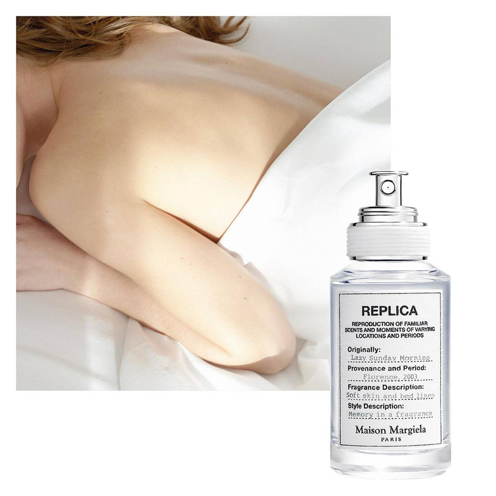
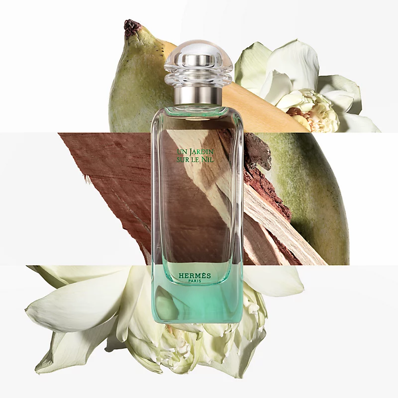

1. メゾン マルジェラ (Maison Margiela)

パリ発のファッションブランドが展開するフレグランスライン「レプリカ」。時や場所を超え、記憶やムードを再現することをテーマにしており、「レイジーサンデー モーニング」をはじめとするストーリー性溢れる日常の美しい一瞬をボトルに閉じ込めた繊細な香りが特徴です。
2. ジョー マローン (Jo Malone London)

ロンドン生まれのラグジュアリーフレグランスブランド。控えめでエレガントな独自の香りは、単体で纏うのはもちろん、異なる香りを重ねて自分だけの香りを創り出す「セント セアリング（香りの重ねづけ）」を楽しめるのが世界中で愛される大きな魅力です。
3. モン パリ オーデパルファム (YSL Mon Paris)

イヴ・サンローランを代表する、恋愛の絶頂を表現したフレグランス。甘酸っぱいベリーと透明感溢れるホワイトダチュラ、官能的なパチョリが織りなす「めまいがするほど愛おしい」ホワイトシプレの香りで、甘く魅惑的なオーラを纏わせます。
4. エルメス (Hermès)

フランスの老舗ハイメゾンが手掛ける極上のフレグランス。「ナイルの庭」に代表される庭園シリーズや「テールドゥエルメス」など、職人技と選び抜かれた最高品質の原料が生み出す、気品と詩情あふれる独創的な香りの世界観を提供しています。
5. シロ (SHIRO)

「自分たちが毎日使いたいものをつくる」という想いから生まれた日本のビューティーブランド。自然の素材にこだわり、「サボン」や「ホワイトリリー」など透明感のある優しく包み込むような香りで、性別や年齢を問わずデイリーに愛されています。